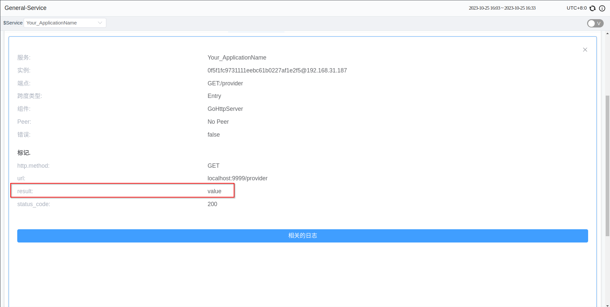

SkyWalking Go Toolkit Trace 详解
背景介绍
SkyWalking Go是一个开源的非侵入式Golang代理程序，用于监控、追踪和在分布式系统中进行数据收集。它使用户能够观察系统内请求的流程和延迟，从各个系统组件收集性能数据以进行性能监控，并通过追踪请求的完整路径来解决问题。
在版本v0.3.0中，Skywalking Go引入了 toolkit-trace 工具。Trace APIs 允许用户在插件不支持的情况下将关键操作、函数或服务添加到追踪范围。从而实现追踪和监控这些操作，并可用于故障分析、诊断和性能监控。
在深入了解之前，您可以参考SkyWalking Go Agent快速开始指南来学习如何使用SkyWalking Go Agent。
下面将会介绍如何在特定场景中使用这些接口。
导入 Trace Toolkit
在项目的根目录中执行以下命令：
go get github.com/apache/skywalking-go/toolkit
使用 toolkit trace 接口前，需要将该包导入到您的项目中：
"github.com/apache/skywalking-go/toolkit/trace"
手动追踪
Span 是 Tracing 中单个操作的基本单元。它代表在特定时间范围内的操作，比如一个请求、一个函数调用或特定动作。Span记录了特定操作的关键信息，包括开始和结束时间、操作名称、标签（键-值对）以及操作之间的关系。多个 Span 可以形成层次结构。
在遇到 Skywalking Go 不支持的框架的情况下，用户可以手动创建 Span 以获取追踪信息。
（为了作为示例，我删除了已支持的框架。以下仅为示例。请在使用私有或不支持的框架的 API 时参考）
例如，当需要追踪HTTP响应时，可以在处理请求的方法内部使用 trace.CreateEntrySpan() 来创建一个 span，在处理完成后使用 trace.StopSpan() 来结束这个 span。在发送HTTP请求时，使用 trace.CreateExitSpan() 来创建一个 span，在请求返回后结束这个 span。
这里有两个名为 consumer 和 provider 的HTTP服务。当用户访问 consumer 服务时，它在内部接收用户的请求，然后访问 provider 以获取资源。
// consumer.go
package main
import (
"io"
"net/http"
_ "github.com/apache/skywalking-go"
"github.com/apache/skywalking-go/toolkit/trace"
)
func getProvider() (*http.Response, error) {
// 新建 HTTP 请求
req, err := http.NewRequest("GET", "http://localhost:9998/provider", http.NoBody)
// 在发送 HTTP 请求之前创建 ExitSpan
trace.CreateExitSpan("GET:/provider", "localhost:9999",
func(headerKey, headerValue string) error {
// Injector 向请求中添加特定的 header 信息
req.Header.Add(headerKey, headerValue)
return nil
})
// 结束 ExitSpan，使用 defer 确保在函数返回时执行
defer trace.StopSpan()
// 发送请求
client := &http.Client{}
resp, err := client.Do(req)
if err != nil {
return nil, err
}
return resp, nil
}
func consumerHandler(w http.ResponseWriter, r *http.Request) {
// 创建 EntrySpan 来追踪 consumerHandler 方法的执行
trace.CreateEntrySpan(r.Method+"/consumer", func(headerKey string) (string, error) {
// Extractor 获取请求中添加的 header 信息
return r.Header.Get(headerKey), nil
})
// 结束 EntrySpan
defer trace.StopSpan()
// 准备发送 HTTP 请求
resp, err := getProvider()
body, err := io.ReadAll(resp.Body)
if err != nil {
return
}
_, _ = w.Write(body)
}
func main() {
http.HandleFunc("/consumer", consumerHandler)
_ = http.ListenAndServe(":9999", nil)
}
// provider.go
package main
import (
"net/http"
_ "github.com/apache/skywalking-go"
"github.com/apache/skywalking-go/toolkit/trace"
)
func providerHandler(w http.ResponseWriter, r *http.Request) {
// 创建 EntrySpan 来追踪 providerHandler 方法的执行
trace.CreateEntrySpan("GET:/provider", func(headerKey string) (string, error) {
return r.Header.Get(headerKey), nil
})
// 结束 EntrySpan
defer trace.StopSpan()
_, _ = w.Write([]byte("success from provider"))
}
func main() {
http.HandleFunc("/provider", providerHandler)
_ = http.ListenAndServe(":9998", nil)
}
然后中终端中执行：
go build -toolexec="/path/to/go-agent" -a -o consumer ./consumer.go
./consumer
go build -toolexec="/path/to/go-agent" -a -o provider ./provider.go
./provider
curl 127.0.0.1:9999/consumer
此时 UI 中将会显示你所创建的span信息

如果需要追踪仅在本地执行的方法，可以使用 trace.CreateLocalSpan()。如果不需要监控来自另一端的信息或状态，可以将 ExitSpan 和 EntrySpan 更改为 LocalSpan。
以上方法仅作为示例，用户可以决定追踪的粒度以及程序中需要进行追踪的位置。
注意，如果程序结束得太快，可能会导致 Tracing 数据无法异步发送到 SkyWalking 后端。
填充 Span
当需要记录额外信息时，包括创建/更新标签、追加日志和设置当前被追踪 Span 的新操作名称时，可以使用这些API。这些操作用于增强追踪信息，提供更详细的上下文描述，有助于更好地理解被追踪的事件或操作。
Toolkit trace APIs 提供了一种简便的方式来访问和操作 Trace 数据：
- 设置标签：
SetTag() - 添加日志：
AddLog() - 设置 Span 名称：
SetOperationName() - 获取各种ID：
GetTraceID(),GetSegmentID(),GetSpanID()
例如，如果需要在一个 Span 中记录HTTP状态码，就可以在 Span 未结束时调用以下接口：
trace.CreateExitSpan("GET:/provider", "localhost:9999", func(headerKey, headerValue string) error {
r.Header.Add(headerKey, headerValue)
return nil
})
resp, err := http.Get("http://localhost:9999/provider")
trace.SetTag("status_code", fmt.Sprintf("%d", resp.StatusCode))
spanID := trace.GetSpanID()
trace.StopSpan()
在调用这些方法时，当前线程需要有正在活跃的 span。
异步 APIs
异步API 用于跨 goroutines 操作 spans。包括以下情况：
- 包含多个 goroutines 的程序，需要在不同上下文中中操作 Span。
- 在异步操作时更新或记录 Span 的信息。
- 延迟结束 Span。
按照以下步骤使用：
- 获取
CreateSpan的返回值SpanRef。 - 调用
spanRef.PrepareAsync()，准备在另一个 goroutine 中执行操作。 - 当前 goroutine 工作结束后，调用
trace.StopSpan()结束该 span（仅影响当前 goroutine）。 - 将
spanRef传递给另一个 goroutine。 - 完成工作后在任意 goroutine 中调用
spanRef.AsyncFinish()。
以下为示例：
spanRef, err := trace.CreateLocalSpan("LocalSpan")
if err != nil {
return
}
spanRef.PrepareAsync()
go func(){
// some work
spanRef.AsyncFinish()
}()
// some work
trace.StopSpan()
Correlation Context
Correlation Context 用于在 Span 间传递参数，父 Span 会把 Correlation Context 递给其所有子 Spans。它允许在不同应用程序的 spans 之间传输信息。Correlation Context 的默认元素个数为3，其内容长度不能超过128字节。
Correlation Context 通常用于以下等情况:
在 Spans 之间传递信息：它允许关键信息在不同 Span 之间传输，使上游和下游 Spans 能够获取彼此之间的关联和上下文。传递业务参数：在业务场景中，涉及在不同 Span 之间传输特定参数或信息，如认证令牌、交易ID等。
用户可以使用 trace.SetCorrelation(key, value) 设置 Correlation Context ，并可以使用 value := trace.GetCorrelation(key) 在下游 spans 中获取相应的值。
例如在下面的代码中，我们将值存储在 span 的标签中，以便观察结果：
package main
import (
_ "github.com/apache/skywalking-go"
"github.com/apache/skywalking-go/toolkit/trace"
"net/http"
)
func providerHandler(w http.ResponseWriter, r *http.Request) {
ctxValue := trace.GetCorrelation("key")
trace.SetTag("result", ctxValue)
}
func consumerHandler(w http.ResponseWriter, r *http.Request) {
trace.SetCorrelation("key", "value")
_, err := http.Get("http://localhost:9999/provider")
if err != nil {
return
}
}
func main() {
http.HandleFunc("/provider", providerHandler)
http.HandleFunc("/consumer", consumerHandler)
_ = http.ListenAndServe(":9999", nil)
}
然后在终端执行：
export SW_AGENT_NAME=server
go build -toolexec="/path/to/go-agent" -a -o server ./server.go
./server
curl 127.0.0.1:9999/consumer
最后在 providerHandler() 的 Span 中找到了 Correlation Context 的信息：

总结
本文讲述了Skywalking Go的 Trace APIs 及其应用。它为用户提供了自定义追踪的功能。
更多关于该接口的介绍见文档：Tracing APIs。
欢迎大家来使用新版本。